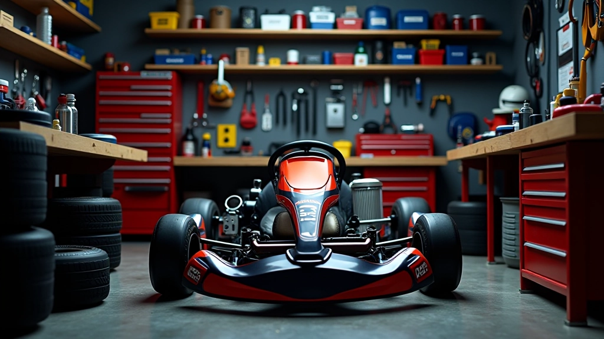

فريق التحرير
فريق التحرير
من يكتب الأدلة التقنية
ميكانيكيون ومعدّو هياكل عملوا في ورش الكارتينج بمدينة 6 أكتوبر منذ 2019. كل رقم في أدلتنا مرّ على مفتاح ربط حقيقي قبل أن يمر على لوحة مفاتيح.
لماذا نكتب من داخل الورشة
الفرق بين الجدول النظري والواقع يظهر في أول جولة. قيمة كامبر "مثالية" على الورق قد تنتج كارتاً غير قابل للقيادة على حلبة بسطح خشن أو حرارة مرتفعة.
لذلك نبدأ كل دليل من حالة فعلية: هيكل معيّن، إطارات معيّنة، وحلبة نعرف سلوكها. ثم نوضّح أي جزء من التوصية عام وأي جزء مرتبط بتلك الحالة تحديداً.

منهجية إعداد المحتوى
أربع خطوات قبل نشر أي رقم أو توصية.
قياس مرجعي
نسجّل حالة الكارت الكاملة قبل أي تعديل: ضغط، زوايا، حالة الإطار، وحرارة السطح.
تعديل مضبوط
متغير واحد في كل مرة، مع جولات مقارنة كافية لاستبعاد أثر الصدفة وحالة السائق.
تكرار في ظروف مختلفة
نعيد التجربة في حرارة وحلبة مختلفتين لنعرف حدود صلاحية التوصية.
كتابة بحدود واضحة
ننشر النتيجة مع ذكر الشروط التي تنطبق فيها، لا كقاعدة مطلقة.
ما نلتزم به
أرقام لا انطباعات
كل توصية مرتبطة بقياس يمكنك تكراره بأدوات بسيطة، لا بوصف غامض للإحساس.
حدود السلامة أولاً
لا ننشر تعديلاً يمسّ الفرامل أو التوجيه دون تحذير واضح ومستوى الخبرة المطلوب.
لا وصفة واحدة
نوضّح دائماً أن الجداول نقطة انطلاق وأن حلبتك وإطارك يحددان النتيجة النهائية.
تحديث بعد كل موسم
نعيد اختبار التوصيات مع تغيّر الإطارات المتاحة محلياً ونحدّث الأرقام.
لديك ملاحظة تقنية؟
إن كانت تجربتك في الورشة تناقض ما كتبناه، أرسل لنا القراءات وسنراجع الدليل. أكثر من تصحيح عندنا جاء من ميكانيكي قارئ.
راسل الفريقإشعار
المحتوى التقني المنشور هنا لأغراض تعليمية وإعلامية. أي تعديل على أنظمة الفرامل أو التوجيه أو الهيكل يجب أن يتم بمعرفة فني مؤهل ووفق تعليمات الشركة المصنّعة ولوائح الجهة المنظمة للسباق.